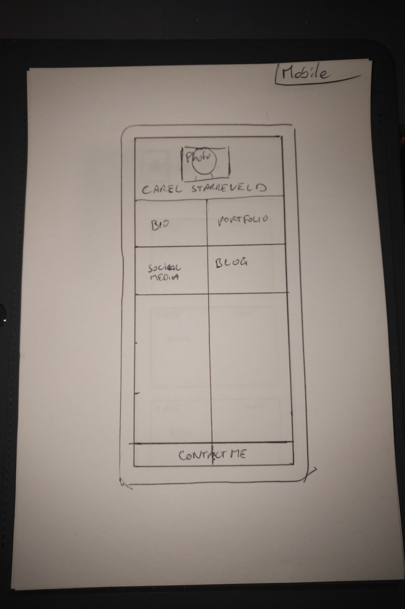
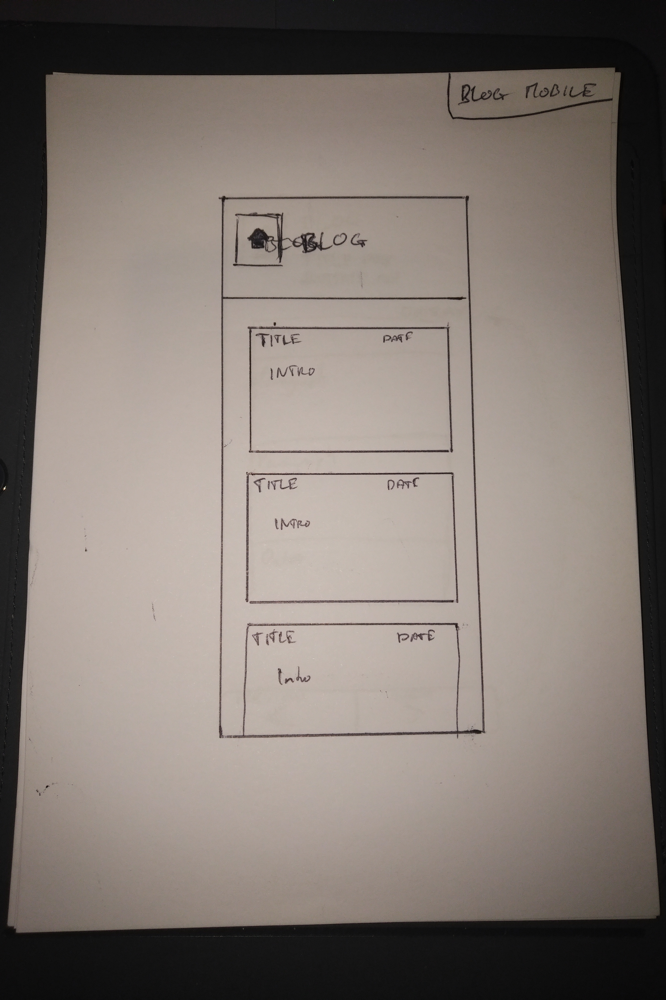
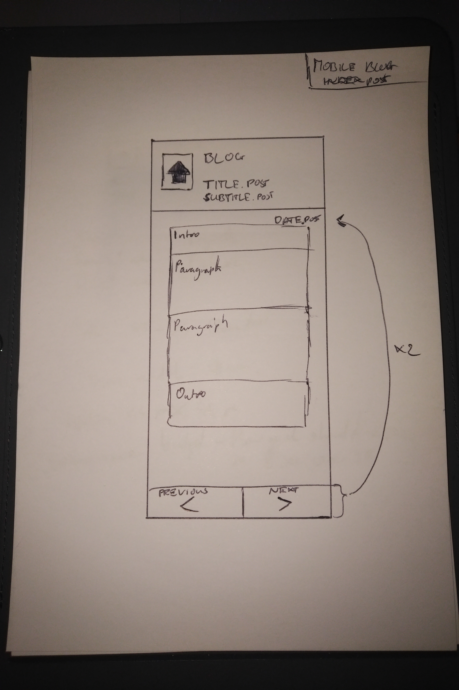
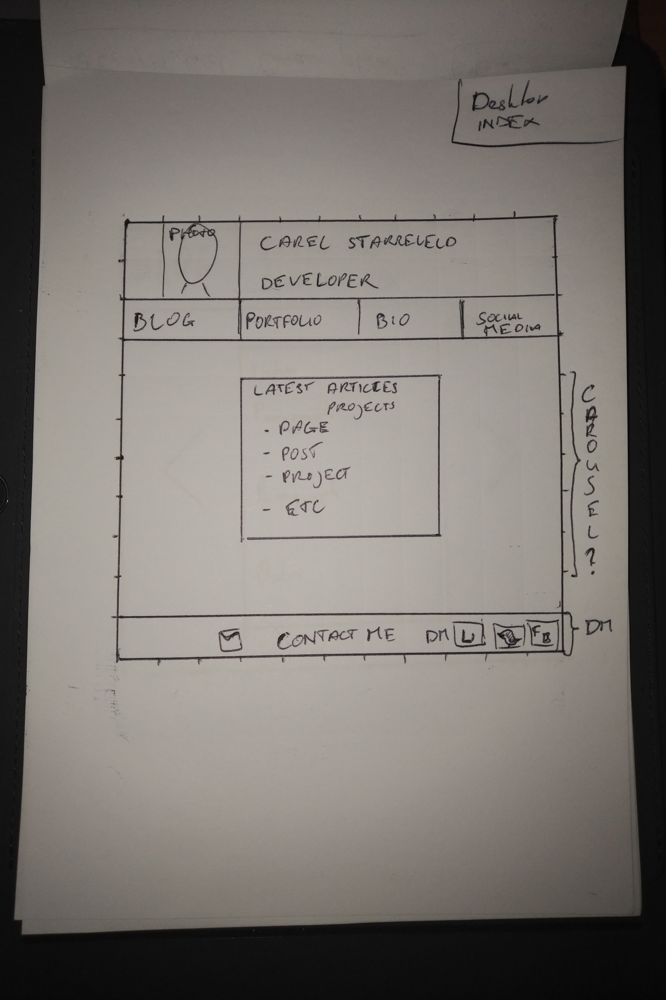
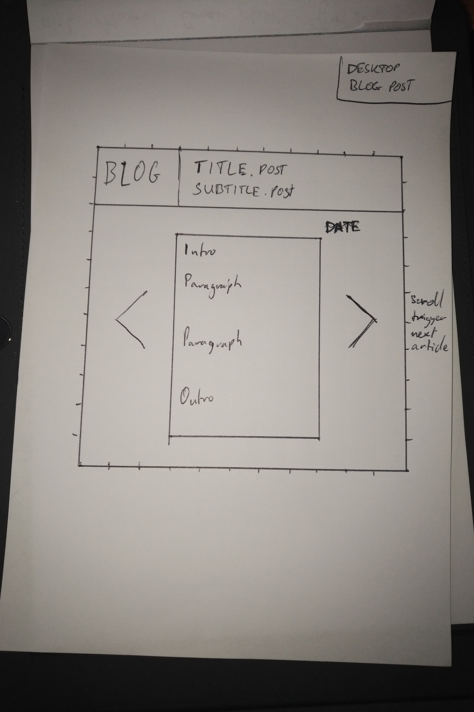

20 September 2018
In this post We will discuss the technical pieces of the third sprint and what I came across.
What is a responsive site and why responsiveness is important.
This is a site which will adjust itself when it notices that the browser changes example: when there is not a lot of screen realestate like a smartphone or touchscreen it can present itself in a more appropriate way. A responsive site is always tailored for the occasion like wearing a suit for an interview and shorts on a warm Summer's day.
What is mobile first design and why it's important.
With this process the site is designed for the mobile phone first and for other devices like tablets or your computer later.
What are frameworks and their pros and cons.
Frameworks are a collection of pieces of code in which automation have been made created for you. This saves you time and effort creating the code yourself. The downside is that it generally comes with other functionality you might not need however as it is a part of the total package it will still be loaded by the browser which means that it might take longer to load
What is a wireframe and why do we use it.
A wireframe is a simple representation of your website which can be more technical then a sketch (boxifying). The goal is to not focus on details or function. This can help you visualise how you want the website to look and assist with the initial setup of the site without getting lost in your thoughts.
Some examples of my wireframes:





Which aspects of your wireframes did you find difficult to implement and why.
The largest difficulty for me was limiting myself in what to add to the wireframe preventing it from making it too complex. This did help me not to lose too much time in this process. Also some of the pieces of my wireframes will need some automation to make it easier to administer in the future.